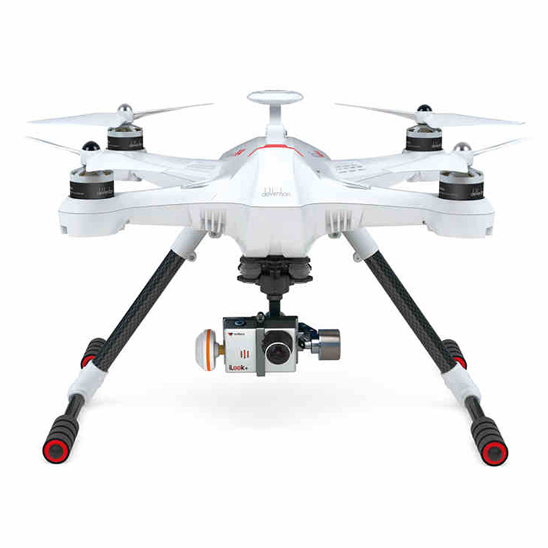
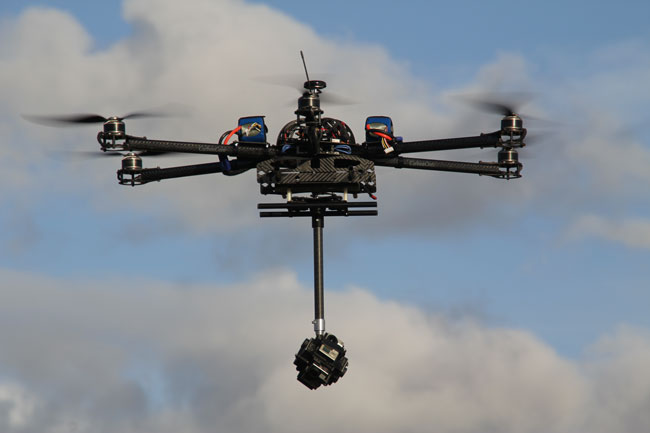
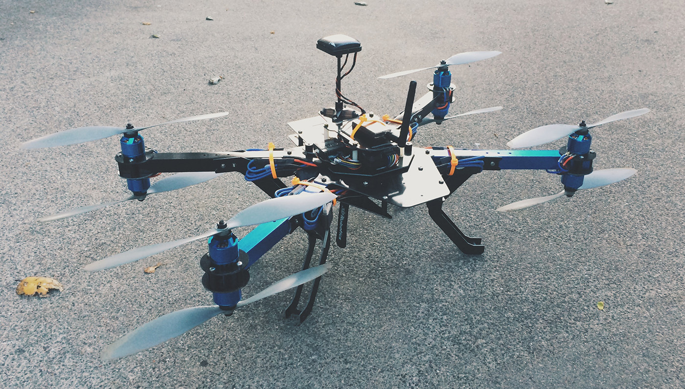

First Person View
Have you ever wanted to fly? It is certainly possible to take a ride in an aircraft, but to get an unobstructed and first person view is unfortunately impossible. However, with the emergence of non-military unmanned aerial vehicles (UAVs), it may be possible to finally simulate the freedom of unrestricted flight.
Drones provide an excellent opportunity for equipment with advanced technological systems, including First Person View technology, abbreviated as FPV. This involves the outfitting of drones with high-quality cameras, broadcasting live video to the pilot. This enables the pilot to immerse themselves a surreal flying experience, giving them a view of the stunning vistas which can be observed in air, and allowing them to maneuver as they please. Consequently, the drones are able to fly through forests, and in smaller areas more efficiently. A gushing waterfall, a vibrant sunset over the ocean, and the depths of a deep gorge or canyon are all experiences available through FPV technology.
Now, if you think that the only use of FPV technology’s application is for sightseeing, you’d be mistaken. The creative and slightly eccentric members of the civilian drone community have created a new sport, FPV drone racing. In this thrilling sport, UAV users race each other through challenging courses in the first person, described a combination of flying and RC car racing. It has gained massive popularity in the United Kingdom and in California, where some enthusiasts have even created leagues in which they stand in a row, viewing and controlling through virtual-reality headsets. Yes, it may be an exclusive sport available only to those who can spare a small fortune for racing-quality drones, but is gaining massive worldwide attention and following.
Overall, FPV drone technology is an exciting and lucrative sector of civilian drone application. Its revolutionary impacts not only in pleasure and sport, but in aerial cinematography and photography will mean that drones will shed their reputation of being spying, militaristic tools to being recognized for their entertaining and exciting nature.
360° Camera Technology
All over YouTube, the most subscribed videographers have a knack for choosing high-quality and cutting edge technology to make the viewing experience better. From some investing in Hollywood grade cameras to document their mundane daily activities in Vlogs (think blogging, but documented in videos), to some pioneering various new technologies such as the formerly unknown selfie-stick and increasingly FPV drones. Generally speaking, they have largely predicted and pioneered the trends of online entertainment. The next great thing on YouTube: the 360 Degree Camera.
When YouTube megastars Casey Neistat and Roman Atwood announced their partnership to document all 360 degrees of their lives, it didn’t seem like much. While being able to pan around their settings in all directions was novel, the image quality was grainy and the ideas were frankly unimpressive, such as showing the entire interior of a dirty airplane bathroom as a customer complaint, YouTuber style. However, this all changed when a fireworks accident was documented in Neistat’s Manhattan work loft, and it was captured in 4k, YouTube’s crispest resolution. The audience was stunned and exhilarated.
“You, my friend, just blew my mind!” exclaimed one.
“When watching this, I feel like I’m in your office right now! It is delightful to pan around your studio!” commented another enthusiastically.
Now, these are bulky and expensive cameras, not really ideal for the average customer of the future. But, what if we were to attach these cameras to drones? It would be the closest thing to flying in real person; soaring through the air and panning about to observe the various sites in a 360 degree radius of the drone.The new high-quality versions of these cameras would be superb in documenting such footage, and the viewer experience would be truly one of a kind.
There are currently no plans to rig 360 degree cameras onto UAVs. However, the aforementioned YouTuber and businessman Casey Neistat has dropped hints suggesting that other rigs for these cameras such as onto vehicles and drones would lead to cinematography at a reimagined scale of user interactivity. And he is right; wouldn’t you want to experience a stunning wonder of the world or a scenic flight in high resolution without leaving your home? It’s an excellent idea, and would be marvelous to see implemented with drones in the future.
Complete Autonomy
Currently, the operation of drones is very labor intensive. Every action must be monitored carefully, even when performing basic data analysis jobs in the geometric and flat areas used for agriculture in America. Millions of military and civilian hours are pored over controls for basic flight missions, and many have deemed the mandate on monitoring all aspects of drone flights a massive waste of work hours. To address this problem, many solutions are being developed to grant complete autonomy to UAV users.
A solution for this problem would involve using GPS technologies to create flight patterns for drones. Commercial airplanes already use a basic form of this technology in the form of the autopilot, but a far more advanced and independent version with greater sensory information analysis would need to be created to fully remove humans from the process. Additionally, takeoff and landing are the most difficult aspects of flying. To tackle this, industrial-grade catapults are being deployed near the battlefront to utilize the principles of propulsion to launch drones, monitoring natural forces imposed upon the drone and adapting the angle of inclination and speed to create ideal and safe takeoffs.
The military is the biggest proponent of autonomy for drones. With over 700 known drones in their fleet and many more without public registrations, they have to employ many thousands of pilots for constant operation. To save on the millions of dollars it takes to keep this operation going, they have sought a solution to create autonomous drones. In an interview with Ars Technica, Marine Corps General Jim Jenkins explained the need for autonomy for UAVs.
“In war, a Marine is driving, so we have not improved upon our original manpower situation... and sometimes it costs more manpower [to operate UAVs]. We need to move towards more autonomy for drones and robots.”
These technologies when combined will be instrumental in removing humans from drone operation. The cost saving measures sought by the military will be applicable in many other industry-related aspects of drone use, and complete autonomy will be an amazingly beneficial technology in the near future.
Avoidance Systems
Amazon’s announcement for the Amazon Prime Air service was one fraught with suspicion and amusement. Internet bloggers mercilessly mocked the service, humorously claiming that they would become ‘drone catchers’, marauding the drones for the potentially valuable contents inside. With this, Amazon realized that they had not considered a multitude of potentially harmful scenarios, and went on to create and patent the revolutionary ‘Sense and Avoid’ avoidance system to prevent collisions with objects, other UAVs, and even to repel and steer clear of attacks, leading the way for avoidance system implementation in UAVs.
Avoidance systems are the range of tools which allow a drone to prevent accidents. They involve the monitoring of various factors through both using sensors to pick up on sensory observations, and through complex code dictating a preventative action based on the input. Amazon is currently the only company looking into the development of a full suite of avoidance software, and they are keen on utilizing it in their Prime drone service.
“Our vehicles will be built with multiple redundancies, as well as sophisticated “sense and avoid” technology. We will not launch Prime Air until we are able to demonstrate safe operations.”
And lastly, while Amazon is still in the process of formulating anti-marauder software, it is already evident that the use of heat-sensors will be key. Detection of body heat and of suspicious human activity will be key in avoiding robberies. If projectiles are fired at the Prime Air drones, basic versions of military anti-missile technology will likely be used, giving the drone a strategic shield to prevent it from being stricken by bullets or objects thrown at it. The successful implementation of non-civilian drones is largely reliant on a sense of public goodwill and support which does not exist currently. It will be in the best interests of mankind as a whole to promote and develop avoidance systems so that we can reap the substantial benefits of UAV implementation into various industries.
Piloting via Smartphone
The increase in usage of civilian UAVs has come with a similar rise in innovative ways to pilot drones. Because most non-military personnel don’t have access to the flight simulators used to pilot military drones, the technology for piloting drones has been quite basic; originally, it was large remote controls salvaged from RC vehicles, a cheap and bulky method for controlling nimble aircraft which require a delicate touch. However, companies are taking a step in the direction of the future: smartphone piloting is a new feature of many of the world’s most popular civilian UAVs. The use of cellphones is a brilliant strategy. This software, if implemented, will include a range of technologies to fulfil its needs. Firstly, Amazon’s patent includes a range of compact sonar and laser sensors to prevent collisions. It is assumed that this, with the addition of highly detailed GPS technology and flight-tracking software for all drones, could nearly eliminate the risk of crashes and accidents. Next, a large rotating laser viewfinder would be used as an extra level of protection against unnoticed obstacles. it fits in the hand, and applications can be developed in order to provide the same functionalities as a remote control, along with a live feed of the cameras or sensors equipped on the drone. The use of smartphones also allows for intuitive piloting using an accelerometer, or the use of a video stream to the phone which grants an exciting piloting experience and a first person view of surroundings for increased safety at higher speeds. It also removes the need to carry a sometimes bulky control panel in favor of something that most people would have on them anyway, fitting neatly into a back pocket. The most popular civilian drone, the Phantom, is leading the way in allowing user functionality through smartphone piloting.
“In the new mode of piloting [invented by Phantom], TapFly, all you have to do to fly is tap on the screen of your smartphone or tablet. To change the direction of flight, you can simply tap the screen to fly anywhere. Flying using control sticks and maintaining altitude, course and speed can be challenging, so TapFly takes over all of these controls from you, leaving you to focus on your visual experience.”
As drone piloting strives to become more of an accessible hobby, manufacturers can make great strides forward in user functionality and in the experience of flying by abandoning the joysticks and remote controls of the past. Adopting suites of smartphone software which are more usable and allow more capabilities than any piloting method before is technology which should be expected to lead in an uptick in civilian UAV sales in the near future.
GPS Tracking
GPS (global positioning system) tracking is used to pinpoint the location of an object that might otherwise need to attempt to locate itself with surrounding features, which can be difficult when the surrounding features are ocean as far as one could see or if the pilot is unfamiliar with the area. It uses an array of satellites and a lot of advanced math to accomplish this.
GPS navigation is used in car navigation systems, cell phones, airplanes, many boats, and also drones. In drones it is mostly be used on a professional level for flights that go far beyond where the pilot can have line of sight, in which case it helps by giving a precise reading on the drones current position, so that it can be navigated successfully to it’s destination without being lost. For example, a military drone pilot would use the onboard system to navigate the drone to its target over unknown areas without fear of getting lost.
If the drone does not have a pilot, it is unlikely it would be able to navigate using the surrounding landscape and a GPS system would be essential to complete it’s task, such as Amazon's package delivery drones knowing where the doorstep that they are headed to is.
Image Recognition
Most drones contain cameras that either record photos or videos, or stream them live to the ground. But as more and more drones are piloted by computers, there can’t always be a human receiving the media taken by the drone to interpret the images. It’s clear to see that having the ability to make programmes that are capable of searching through an image and identifying what it contains.
Image recognition programmes do just that, ranging from faces to places. It is used by everything from photo library programmes to sort photos based on things that would otherwise need to be tagged by a user, to government facial recognition used to identify people in videos or pictures taken from above by drones.

This is a relatively new technology and is therefore still developing, and it improves all the time. As it gets more and more powerful, it gains more potential applications. One example is that it could be used to automatically spot blights in fields from the sky, or wildfires before they spread to anything dangerous, giving an early warning that could save many billions of dollars. It could be used for drones to track criminals, removing the need for manhunts that put police into potential danger.